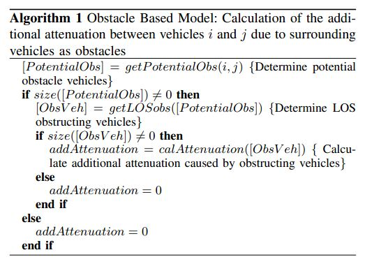
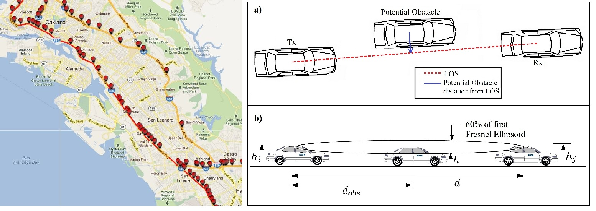

Advisors: Dr. Oznur Ozkasap; Dr. Sinem Coleri Ergen
Comparison of
Simplistic and easy to implement Unit Disk and Log Normal Model with
Complex and hard to implement Obstacle Based Model
Realistic Microscopic Simulation generated using
Simulator SUMO
Database PeMS Database
For highway traffic schenarios
Unit disc Model:
In unit disc model, the vehicles can communicate with
each other if they are within a threshold distance and cannot
communicate otherwise.
Stochastic Large-Scale Fading Model:
Stochastic large-scale fading model aims to take average of
the additional attenuation caused to the obstacles. The resulting
distribution of these variations has been found to be log-normal
Obstacle Based Model:
Obstacle-based channel models propose mechanisms to incorporate the effect of the surrounding obstacles, such as other
vehicles, walls and buildings, on the received signal strength, rather than averaging the additional attenuation due
to these obstacles using stochastic large-scale fading model.
|  |
|  |
Conclusion:
Our study show that simplisitc channel models like Log Normal shadowing models, if tuned properly, can be used to realistically model channel instead of using complex and hard to implement obstacle based model
{kind=link}
{kind=link}